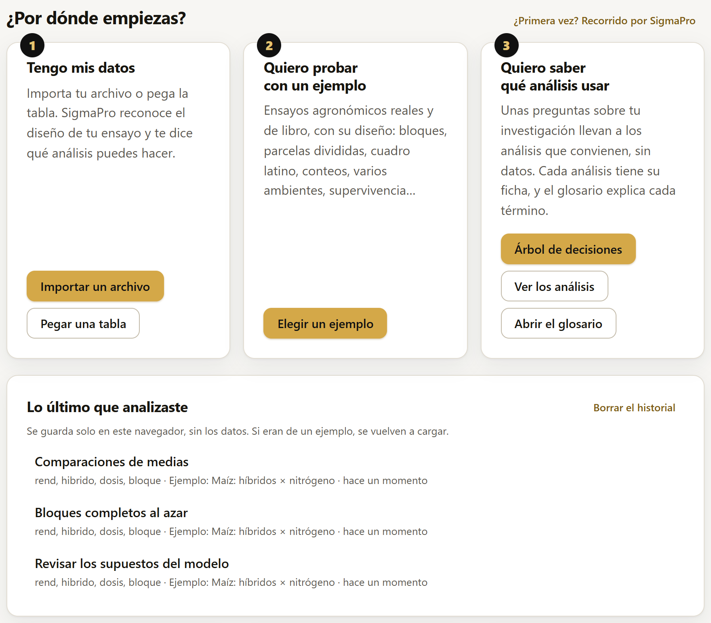

Inicio: qué promete SigmaPro y cómo va
El primer bloque es la puerta de la app. Dice en una frase para qué sirve, ofrece tres caminos para empezar (tus datos, un ejemplo o saber qué análisis usar), recuerda lo último que se analizó, resume sus tres compromisos (exactitud comprobada contra R, código reproducible y privacidad total) y muestra en qué punto está su desarrollo. Más abajo lista todo lo que se puede analizar, con un enlace a la ficha de cada análisis, guarda los datos del programa y los ajustes de la pantalla de apertura, y presenta las apps hermanas de la suite. Si la última vez se cerró la pestaña con trabajo a medias, aquí aparece el aviso para recuperarlo.
- 1.1Lo que se ve al abrir la app
- 1.2Los tres compromisos
- 1.3El estado del desarrollo
- 1.4Si quedó un trabajo guardado
- 1.5Qué puedes analizar
- 1.6Acerca de SigmaPro y la pantalla de apertura
- 1.7Explora la suite LABG
1.1Lo que se ve al abrir la app
SigmaPro abre siempre en este bloque, después de la pantalla de apertura (sección 1.6): al pulsar Start, el logo y el nombre viajan a su lugar en la barra de arriba y aparece Inicio. El título resume la idea de toda la app: del experimento a la conclusión, con cifras que se pueden comprobar. Debajo, una frase dice lo que hace: diseños experimentales, comparaciones de medias, regresión y modelos mixtos, con un asistente que entiende el ensayo, reportes listos para publicar y el código R de cada análisis.
La ilustración de la derecha es un resumen en miniatura de un resultado típico: medias de tratamientos unidas por una curva, cada una con la letra que indica qué medias difieren entre sí, y abajo la fórmula del análisis que las produjo (rend ~ bloque + híbrido × N), con la σ del logo al fondo. Es decorativa; los números reales aparecen cuando se cargan datos.

La nota Tus datos nunca salen de este navegador recuerda que todo se calcula en la computadora de quien usa la app (sección 1.2).
¿Por dónde empiezas?
Bajo el título, tres tarjetas numeradas ofrecen las tres maneras de empezar (figura 1.2):
| Camino | Qué hace |
|---|---|
| 1 · Tengo mis datos | Importar un archivo y Pegar una tabla abren lo mismo que en el bloque Datos (secciones 2.3 y 2.4); al cargar la tabla, la app pasa a Datos, que dice qué ve en el ensayo (sección 2.13). |
| 2 · Quiero probar con un ejemplo | Elegir un ejemplo abre la lista de los 27 ejemplos (sección 2.5); al elegir uno, la app lo carga y pasa a Datos. |
| 3 · Quiero saber qué análisis usar | Árbol de decisiones lleva al análisis con unas preguntas sobre la investigación, sin datos (sección 9.3); Ver los análisis abre el catálogo de Fundamentos, con la ficha de cada análisis (capítulo 9), y Abrir el glosario, el glosario de la app (introducción I.6). |

Lo último que analizaste
SigmaPro recuerda cada análisis que se calcula en Explorar o en Análisis: el método, las variables y las opciones, los datos con que se hizo y cuándo; un mismo análisis con los mismos datos ocupa un solo renglón, el del último cálculo. La tarjeta Lo último que analizaste muestra los cinco más recientes, y un clic en uno lo vuelve a abrir con sus variables y opciones. Si la tabla cargada no tiene sus columnas y los datos eran de un ejemplo, lo carga otra vez (la tabla de antes queda en Volver a la tabla anterior, sección 2.12); si eran de un archivo, un aviso dice qué columnas faltan. El mismo historial, con hasta quince análisis, está en el botón Historial del bloque Análisis (sección 4.1).
El historial se guarda solo en ese navegador y no contiene ningún valor de los datos: solo los nombres de las columnas y de los datos. Borrar el historial lo vacía.
Al final de cada bloque hay dos botones, ← Anterior y Siguiente →, con el nombre del bloque al que llevan; en Inicio solo aparece el segundo y en Suite LABG, el último, solo el primero. El recorrido natural es el de la barra: de los datos al análisis, al reporte, a las figuras y a la exportación. Pero cada bloque se puede abrir en cualquier momento.
1.2Los tres compromisos

Bajo los caminos, tres tarjetas resumen lo que distingue a SigmaPro. No son lemas: cada una se puede comprobar; en la primera, Ver la validación lleva al bloque 8 (capítulo 8).
Cada resultado trae el código R que da lo mismo, con los datos, el modelo y las opciones que se usaron. Sirve para que un revisor, un asesor de tesis o uno mismo años después repita el análisis sin SigmaPro. El proyecto .labg guarda además un guion que repite todos los análisis del reporte (capítulo 7).
Todo se calcula en el navegador: los datos no se envían a ningún servidor, ni siquiera para los modelos que corren en el motor R, que también funciona dentro del navegador (introducción I.7). Abierta con doble clic, la app no hace ninguna petición fuera de la computadora, salvo la primera descarga del motor R.
Que la diferencia sea de una millonésima significa que, en la práctica, las cifras de SigmaPro y las de R son las mismas en todos los decimales que se publican. Una F de 60.635 en SigmaPro es una F de 60.635 en R; un valor p de 0.0034 es 0.0034. Cuando un método no puede alcanzar esa exactitud porque el propio R introduce un ruido numérico mayor (por ejemplo, ciertos ajustes iterativos), el caso lleva una tolerancia propia con su motivo escrito, y así aparece en la validación (capítulo 8).
1.3El estado del desarrollo
Más abajo, la tarjeta Estado del desarrollo explica cómo se construye SigmaPro: por hitos, y cada hito se cierra solo cuando todas sus comparaciones contra R y todas sus pruebas automáticas pasan. La lista marca con ✓ los hitos terminados, con ● el que está en curso y con ○ los pendientes; el número de cada hito dice a qué fase pertenece. Están terminados todos, hasta el último de la lista: la publicación de la versión 1.0.0.
| Fase | Hitos | Qué trajo |
|---|---|---|
| Fase 1 | 1.0 a 1.12 | Los cimientos y lo que más se usa en el campo: la hoja de datos, los descriptivos, los supuestos con semáforo, las pruebas t y no paramétricas, el análisis de varianza de los diseños experimentales, las comparaciones de medias, la ANCOVA, la regresión, la correlación, las tablas de contingencia, el asistente, el constructor de modelos, el reporte, las figuras y las exportaciones. |
| Fase 2 | 2.0 a 2.10 | Los modelos que piden más cálculo: los mixtos (en el motor R dentro del navegador), las medidas repetidas, los componentes de varianza y la heredabilidad, los modelos lineales generalizados y sus versiones mixtas, la regresión no lineal y la dosis-respuesta, las superficies de respuesta y los ensayos multiambiente con su estabilidad. |
| Fase 3 | 3.0 a 3.9 | El tamaño de muestra y la potencia, el muestreo, la supervivencia, las series de tiempo, el multivariado (MANOVA y discriminante) y, como ampliación, los estratos en la supervivencia, la prueba M de Box, los modelos ARIMA, Cox y la MANOVA en el constructor y el guardado automático del trabajo. |
| Fase 4 | 4.0 a 4.5 | Los cálculos completos: la regresión no lineal con hormesis, Michaelis-Menten y la dosis económica; el multiambiente con imputación de celdas, WAAS y el análisis en dos etapas; el generador de diseños de superficies, las mezclas, la deseabilidad y la superficie en 3D; los generalizados con intervalos perfilados y la corrección de Firth; el asistente que reconoce las parcelas divididas en los datos; y la interfaz en inglés. |
| Fase 5 | 5.0 a 5.11 | La app que explica lo que calcula: las fichas de Fundamentos de los 78 análisis, el bloque Suite LABG con las sugerencias de las apps hermanas, la pantalla de apertura, las ilustraciones del catálogo y los temas de las gráficas; la carga rápida; «Cómo leer este cuadro», con medidores, curvas y tarjetas de interpretación; los niveles Básico, Estándar y Experto; el semáforo con íconos y «Probar la alternativa»; «En pocas palabras» y «Cómo reportarlo»; el glosario; lo que orienta (los caminos de Inicio, el historial, el árbol de decisiones, los recorridos, las ayudas, el modo presentación y los errores en palabras); el reporte rediseñado, con su apéndice metodológico, el Markdown y la hoja de trabajo para clase; y las pruebas de calidad de lo que se lee, de los enlaces, de accesibilidad y de velocidad. |
El número que aparece al pie de cada página de la app (SigmaPro v1.0.0) es la versión. Este manual describe la versión 1.0.0.
1.4Si quedó un trabajo guardado
Mientras se trabaja, SigmaPro guarda solo, en el propio navegador, los datos, los análisis del reporte y los ajustes de las figuras (el guardado automático, sección 7.7). Si la pestaña se cerró sin guardar el proyecto, o la computadora se apagó, al volver a abrir la app aparece este aviso en la parte de arriba de Inicio y de Datos:

- Recuperar el trabajo vuelve a cargar los datos tal como estaban (con sus tipos, sus columnas calculadas y su filtro), los análisis del reporte y los ajustes de las figuras. Los resultados se recalculan con esos datos, así que son exactamente los de antes. La app se abre en Resultados, o en Datos si el reporte estaba vacío.
- Descartar borra lo guardado y deja la app vacía.
- Si no se elige nada y se empieza otro trabajo, el anterior no se pierde: el aviso sigue a la vista y se puede recuperar mientras la pestaña esté abierta. Recuperarlo con otros datos ya cargados pide confirmación, porque los reemplaza.
Lo guardado vive en ese navegador de esa computadora. No viaja a otra máquina, se pierde si se borran los datos del navegador y, en una ventana privada, se borra al cerrarla. Para conservar un trabajo, compartirlo o llevarlo a otro equipo, se guarda el proyecto .labg en el bloque Exportar (sección 7.6).
1.5Qué puedes analizar
La tarjeta Qué puedes analizar lista los 78 análisis de SigmaPro, agrupados en sus 18 familias, de los descriptivos a la supervivencia y las series de tiempo. Sirve para ver de un vistazo lo que hace el programa antes de cargar datos.

Cada nombre abre la ficha del análisis en el bloque 9, Fundamentos: para qué sirve, el modelo y sus supuestos, los datos que necesita, cómo se lee el resultado y sus referencias (capítulo 9). Desde la ficha, Abrir este análisis lleva al análisis y Cargar los datos de ejemplo lo abre ya con su ejemplo cargado, así que esta lista es también un atajo para probar cualquier método.
1.6Acerca de SigmaPro y la pantalla de apertura
La tarjeta Acerca de SigmaPro dice quién hizo el programa y con qué licencia, y reúne los controles de la pantalla de apertura.

| Control | Qué hace |
|---|---|
| Ver la intro | Muestra otra vez la pantalla de apertura completa, hasta Start. |
| Pantalla de presentación | La escena de la apertura en bucle, sin botón, para proyectarla en una clase o en un stand. Se sale con cualquier tecla o con un clic. |
| Mostrar la intro al abrir | Marcada (como viene), la apertura sale al abrir la app: completa la primera vez y en versión corta (un segundo y medio) las siguientes. Desmarcada, SigmaPro abre directo en Inicio. La elección se recuerda en el navegador. |
La apertura nunca estorba el trabajo: Saltar o Esc la quitan en cualquier momento, no se repite al recargar la misma pestaña y, si el sistema pide reducir el movimiento, aparece quieta. Mientras se ve, la app termina de cargar detrás.
1.7Explora la suite LABG
Al final de Inicio, el recuadro negro y dorado Explora la suite LABG presenta cuatro apps hermanas de SigmaPro, las que más a menudo continúan un análisis agronómico: PCAPro (componentes principales), ClusteringPro (conglomerados), AgriDesign (diseño y sorteo de experimentos) y CorrelationPro (correlación). Cada tarjeta trae su logo, su versión, sus funciones y los botones Abrir app, Manual y Citar; es el mismo recuadro del bloque 10, que muestra las 22 apps de la suite por área; el capítulo 10 lo explica completo (Figura 10.1 y Cuadro 10.1).